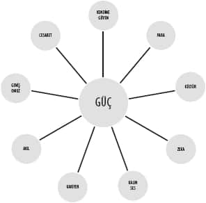
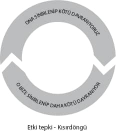

.
.
Gençliğimizin ilk yıllarında hepimiz ilişkilere ne kadar masum, iyi niyetli ve büyük umutlarla başlamışızdır. Sonra ilişkilerin gerçekleriyle, aşk oyunlarıyla tanışır, çok sevdiklerimizin bizi o kadar sevmediğini görür, öte yandan pek de ilgilenmediklerimizin bize ne kadar âşık olabileceğini tecrübe ederiz. Ayrılıklar yaşayıp üzülür, hak etmiş olsak da terk edildiğimizde öfkeleniriz.
Aldığımız dersler başlarda daha çok belli kişilerle ilgilidir. Ancak, benzer örnekleri gördükçe olumsuz derslerimiz genele yansımaya başlar. Öfkemiz sorun yaşadıklarımızdan tüm karşı cinse kaymaya başlar. Yirmili yaşlarda benzer tecrübeleri yaşamış herkesin benzer söylemlerini duyarız.
“Erkekler domuzdur, amaçları sadece sekstir.”
“Kadınlar yüzeyseldir, sadece paraya bakarlar.”
Sadece genel söylemler değil, kişisel inançlar da devreye girer. Yaşadığımız olaylar bize iyi ya da kötü “karşı cinsin gözünde ne kadar çekici” olduğumuzu gösterir. Potansiyelimizi görür, kendimiz ve yapmamız gerekenler hakkında da inançlar oluştururuz.
“Yeterince karizmatik ve güçlü gözükmüyorum. Daha özgüvenli davranmalıyım.”
“Yeterince eğlenceli değilim, biraz daha rahat olmalıyım.”
“Yeterince güzel değilim. Kilo vermeden bana bakmayacaklar.”
“İğrenç bir burnum var, bundan kurtulmadan hiçbir zaman güzel olamayacağım.”
Evet, kendimiz, potansiyelimiz, karşı cins ve ilişki dünyasının kuralları hakkında algımızı ve hayat gerçeğimizi yaratan birçok inanç geliştiriyoruz.
Eğer istediğiniz ilişkiyi yaşayamıyorsanız, iyi bir analiz yaparak aslında nerede takıldığınızı bulmanız gerekiyor. Belki çok büyük bir potansiyeliniz var ama utangaç olduğunuz için kullanamıyorsunuz ya da yeterince sosyal değilsiniz, birileriyle tanışma şansınızın olduğu ortamlara girmiyorsunuz. Belki de, kendinize güvensiz gözüktüğünüzden karşı cinsi itiyor olabilirsiniz.
Aslında, ilişkiler meselesi başlı başına bir kitabın konusu olacak kadar uzun ve kapsamlı. Zaten bu konu üzerine piyasada yüzlerce farklı kitap da bulabilirsiniz. Hiç belli olmaz, birkaç sene sonra NeuroFormat® Sistemi’nin aşk ve ilişkilere uygulanmasının bulunduğu detaylı bir kitabı da raflarda görebilirsiniz. Ama biz yine de kapsamımızı dar tutalım ve ilişkiler konusunda bizi neyin engellediğini bulmaya çalışalım.
Engelleyeni bulmak
Sistemimiz en başından beri hep bizi neyin engellediğini bulup temizlemek üzerine. Bu yaklaşımın doğruluğunu teyit etmek için, aslında bekâr insanların neredeyse hepsinin bir şekilde ilişki istediğini ama öyle ya da böyle, bir nedenden dolayı, bunu yaşayamadıklarını görürsünüz. İlişki yaşamaya daha da fazla motive olmak onları çözüme ulaştırmayacaktır. Çünkü zaten dünyanın bir şekilde ilişkiler ve cinsellik çevresinde döndüğünü iyi kötü hepimiz biliyoruz. Zaten, hepimiz iyi bir ilişki yaşamaya bazen “gereğinden fazla” motiveyiz bile diyebiliriz.
Hepimiz, gayet yerinde bir motivasyonla başladığımız halde tümüyle elimizde olmayan nedenlerle ilişkiler konusunda başarısız olduğumuzda neler yaşayacağımızı biliyoruz.
“Patinaj”, üzüntü, kendine güvensizlik, öfke ve demotivasyon!
Hatta ilginçtir hem ilişki konusunda hem de hayatın daha başka alanlarında istediğinize “oluruna bıraktığınız” zaman kavuştuğunuzu bile tecrübe etmişsinizdir.
Tüm bu anlattığım nedenlerden dolayı biz yine, kendimizi daha fazla motive etmekten ziyade, önümüzdeki engelleri temizlemeye çalışalım.
Kadınlar ve erkekler
Aslında her iki cinsin ilişkilerdeki rolü farklı. Bu konuda kesin doğrular ne yazık ki yok! Aşk, ilişkilerin en merkezindeki konu, yani insanın aslında doğası gereği tekeşli mi yoksa çokeşli mi olduğu konusu bile net sayılmaz.
Doğa ananın insan neslini korumak için kendine göre bir düzeni var, bu kesin. Burada her iki cinsin de farklı rolleri olduğu söylenebilir.
Buna göre, erkeklerin rolünün sperm yaymak ve mümkün olan en çok sayıda çocuğun doğmasını sağlamak, kadının rolününse yaşama ihtimali olabilecek en güçlü çocuğun doğmasına çalışmak olduğunu söyleyebiliriz.
İşte bu yüzden erkekler aşksız, sadece cinsellik için cinselliğe açıkken, bu genelde kadınların doğasına aykırı. Zira kadınlar “nitelik” erkekler “skor” peşinde.
Tüm bunların ışığında, aslında erkek ve kadınların karşı cinsten beklentilerinin farklı olduğunu tüm toplumlarda gözlemleyebilirsiniz.
Erkekler ne ister?
Erkekler konuya daha çok görsel yaklaşıyor. Evet, erkeklerin de nitelik bazında “olmazsa olmazları” varsa da, bu şartları karşılayan en güzel kadını elde etmeye çalışıyorlar.
Ne yazık ki, biz erkeklerin kadınları değerlendirme şekli oldukça yüzeysel. Belli sosyo-ekonomik altyapısı, eğitimi, zekâsı, kültürü, karakteri olan kadınlar arasından fiziksel olarak en çekici bulduklarımızı tercih ediyoruz. İstisnalar olsa da maalesef erkeklerin geneli bu yönde.
Erkeklerin estetik zevkleri de kadınlardan oldukça farklı, hemcinsleriyle tutarlı. Mesela, 100 kadın ve 100 erkekten oluşan bir grupta, her iki gruba da en çekici buldukları kişileri sorarsanız, kadınlardan birçok farklı tercih gelecektir, birçok farklı erkek belli kadınlar tarafından “en çekici” olarak nitelendirilecektir.
Aynı soru erkeklere sorulduğu zaman, erkeklerin neredeyse tamamı 2-3 kadın üzerinde “anlaşma” sağlayacaktır. Evet, itiraf etmek gerekirse biz erkekler tercihlerimiz konusunda oldukça düz ve sıkıcıyız!
Sadece kendimizi sıkmakla kalmıyor, kadınları da tek tipleştirmek (muhtemelen sarışın ve uzun bacaklı) adına elimizden gelen her şeyi yapıyoruz. Tabii ki istisnaları olsa da, ne yazık ki kadınların aile ve iş hayatını bir bakıma ne kadar “estetik” oldukları belirliyor. İşte bu yüzdendir ki, zaten ekonomiyi canlandıran en büyük güç, kadınların “güzel” görünme ihtiyacının çevresinde dönüyor.
Kadınlar ne ister?
Kadınlar da kendilerine ve çocuklarına bakabilecek en güçlü erkeği elde etmelerini söyleyen “hormonlarının” etkisindeler. İşte tam da bu yüzden, biz erkekler hayatlarımızın ilk dönemlerinde çok güzel kadınların yanlarındaki “kaba saba” ve bizlere göre “çirkin” adamları gördükçe bunun nedenini anlamakta zorlanırız. Sonra büyüdükçe bu olayı kanıksamaya başlar ve belki ilerleyen dönemlerde kadınların aslında bir yönüyle “güçlü” erkeklerin peşinde olduklarını keşfederiz.
Güç derken, fiziksel güçten değil, kadınlara “güçlülük” hissi veren özelliklerden bahsediyorum. Örnek mi?
Kendine güven, akıl, kültür, zekâ, eğitim, uzun boy, geniş omuz, kalın bir ses, para, kariyer, cesaret bu özelliklerden sadece bazıları.
Karizma kelimesini kullanmadım. Ama bakarsanız yukarıdaki özelliklerin bir araya gelmesi zaten “karizma”yı yaratıyor.

Bu arada bu özelliklerden akıl, zekâ, kültür gibi bazıları var ki, onlar doğru şekilde “güçlü” yanlarıyla kullanılmalı. Mesela, kadınlar zekice ve kendine güvenli bir şekilde espri yapan ve genelde komik duruma düşenlerden ziyade başkalarını “ti”ye alan erkekleri tercih ederler. İşte bu yüzden “sakarlığa” herkes güler, ama bu pek de çekici bir özellik sayılmaz.
Olası engeller
Tüm bunlardan neden mi bahsettik? Bizi mutlu eden bir ilişki yaşamamıza engel olan nedenleri bulmak için mevcut durumu özetlememiz gerekti de ondan.
Evet, aslında daha farklı ve ideal ilişkiler yaşansa da amacımız dünya düzenini biraz da olsa genel kurallara oturtmaktı. Umarım biraz da genellemeleri paylaşarak sizleri kırmamışımdır...
Bu arada yaş, cinsiyet, geçmiş gibi birçok özelliğimize göre hepimizin ilişkilerden farklı beklentileri var. Bazılarımız gönül eğlendirmek, bazılarımız evlenmek ve acil çocuk yapma peşindeyken diğerlerinin “adrenalin” peşinde olması gibi mesela...
Tabii ki amacım, ideal ilişkiyi tanımlamak ve size öğüt vermek değil. Şu an sadece sizin istediğiniz ilişkiyi engelleyenin ne olabileceğini sorgulamanızı ve kendi kendinize bulmanızı sağlamaya çalışıyorum.
Peki, sizin için ideal ilişkiyi yaşamanızı engelleyen ne olabilir?
İlişkilerde çıkabilecek sorunları 4 farklı alanda inceleyelim. Bunlar sırasıyla:
1- Çekicilik
2- Ulaşılabilirlik
3- Flört
4- İlişki
Çekicilik derken neden bahsettiğimiz zaten çok bariz.
Ulaşılabilirlik bizim ne kadar deneme yapabildiğimizle ilgili. Eğer erkeksek, içinde yaşadığımız topluma göre abartmamak kaydıyla istediğimiz kadar deneme yapabiliriz. Kadınlarınsa geleneksel rolleri pasif bir şekilde beklemek şeklinde çizili.
Flört, kontak kurulduktan sonra kendimizi nasıl gösterdiğimiz ve iletişimi bir ilişkiye çevirip çeviremediğimizle ilgili.
İlişki bölümüyse, flört, nişanlılık ve evlilik dahil ilişki süresince ortaya çıkabilecek tüm sorunları kapsıyor.
Şimdi ilişkinin bu 4 farklı evresinde çıkabilecek sorunları ve onları NeuroFormat® Sistemi’yle nasıl çözebileceğimizi görelim.
“Beni kimse beğenmiyor!”
Aslında NeuroFormat® Sistemi erkeklerin çekiciliğini arttırmak için biçilmiş kaftan! Çünkü bizlerin çekiciliğini sağlayan görüntü dışında birçok özellik var.
Kadınların işleri ise biraz daha zor. Fakat tekniklerimiz elbette kadınlarda da işe yarayacak, kişisel karizmayı artıracaktır.
Özellikle kendine güven, tekniklerimizle oldukça hızlı bir şekilde iyileşme sağlayacağımız konuların başında geliyor. Bunun için yapmanız gereken “Kendimizle Barışmak” bölümünde pratik yaparak, tüm özelliklerimizle barışmak. Bu arada, “Utangaçlık” bölümünde kullanmanızı önerdiğim şekilde “kendinizi neden çok sevdiğinizi” anlatan olumlamaları kaydedip dinleyerek “gücünüze güç katın”.
“Ruh eşim nerede?”
Toplumumuzda erkeklere verilen rolden dolayı işimiz kolay gibi gözükse de, tabularımızdan ve yaptığımız gereksiz gururdan dolayı çoğumuz yeterince denemiyoruz. Aslında reddedilme, küçük düşürülme, başkalarına rezil olma korkuları içinde biz erkekler “eski cahil cesaretimizi” kaybettik. Evet, sokakta laf atmalar erkeklerin belli bir bölümü tarafından hâlâ uygulansa da bunların ne kadar “etkili” olduğu zaten ortada!
Reddedilme korkusunu temizleyebilseniz, ilişki konusunda hayatınızda nasıl bir değişiklik yaşanırdı?
Ciddi değişiklikler olurdu diye düşünüyorum...
“Utangaçlık” bölümünde, özellikle “Eyleme geçme” alt başlığındaki uygulamaları yaparak, mümkün olduğu kadar birisiyle tanışmak üzereyken hissettiğiniz kaygıları temizleyin. Nerede, hangi ortamda tanışmak istediğiniz önemli değil. Bunu yaptığınız her yerde, kaygılarınızı temizleyerek bir “sosyal canavara” dönüşebilirsiniz.
Ya kadınlar?
Sevgili hanımlar sizlerin en büyük sorunu tabularınız... Beyninizin küçüklükten beri ilişkiler konusunda yıkanması... Yetişkinlik çağlarını yaşayan kadın okurlarım, zaten bu bilgilerden önemli bir bölümünün aslında yanlış olduğunu biliyorlardır.
Eğer ilişkiler konusunda ailenizden size miras tabular kaldıysa bunları “meli-malı” ile temizleyin. Çoğu zaman bu tabular sizleri sosyal hayattan kopararak yarardan çok zarara neden oluyor.
Tüm bunların yanında karşı cinsle rahat olabilmek, onlarla rahat bir şekilde tanışıp kaynaşabilmek için en önemli şartlardan biri de, onlara karşı olan “kızgınlığın” temizlenmesi.
Karşı cinse neden öfkelisiniz? Nedenleri birer birer yazın ve “Öfke Temizliği” bölümünde olduğu gibi bu nedenlerden dolayı hissettiğiniz duyguları birer birer temizleyin.
Unutmayın ki, bilinçaltınız öfke duyduğunuz
kişi ve durumlardan sizi uzak tutacaktır. Öfkeniz
temizlenmediği sürece, karşı cinsin yanında
tam olarak “rahat” davranamazsınız.
“Aşk bir oyun mu?”
Aşk, hayal ettiğin ve sonra “hayal ettiklerin” elinden alındığında hissettiğin duyguların toplamıdır...
Aslında aşk gerçekten de, elde etmeyi istediğimiz kişiyi hiçbir şekilde elde edemediğimizde hissettiğimiz bir duygu. İşte tam da bu yüzden karşılıklı gizemin ortadan kalktığı, çiftlerin birbirini garanti altına aldığı evlilik ortamında, aşk da yerini sevgiye bırakıyor.
Karşınızdakileri size âşık etmenin birçok yolu var. Genelde gizemli olmak, sevgi gösterirken bir o kadar da dengesiz ve tahmin edilemez olmak gibi “manipülatif” özellikler bunlar. Ne yazık ki çok az ilişkide koşulsuz sevgi, karşılık bularak mükemmel bir ilişkiye dönüşebiliyor. İnsanlar karşıdakinin iyi niyetini ve fedakârlıklarını belli bir süre sonra “cepte” görmeye başlayarak heyecanlarını yitirebiliyorlar. Hatta çoğu zaman, ilişki dengesi “kaybetmeye hazır” olan lehine değişmeye başlıyor.
Umarım siz hayatınızda, koşulsuz sevgi ve aşkı yaşadığınız ideal ve “ütopik” ilişkiyi bulur ve sürdürürsünüz.
Ama aşk oyununu iyi oynayabilmek içinde en büyük şart, “kaybetme korkusundan” arınmak! Gördüğünüz gibi aşkta da temel silahımız korkuyu yok etmek. Korkulardan, kaygılardan nasıl arınabileceğinizi ise artık biliyorsunuz.
Strateji size kalmış, ancak doğru stratejiyi uygulamakta korkularınızdan dolayı zorluk çekiyorsanız, onlardan arınmak mümkün...
“Çok düzeyli bir ilişkimiz var...”
Bu bölümde, “yakınlıkların” artık “ilişkiye” döndüğü, olayın “adının” konduğu ilişki, nişanlılık ve evlilik gibi dönemlerde yaşayabileceğimiz sorunların “formatlanmasını” ele alalım.
Tabii hepimiz hayatımız boyunca birçok farklı ilişki yaşıyoruz ve bu bölümde ortaya çıkabilecek sorunların “haddi hesabı” yok. Peki, yaşadığımız ortak durumlar, sorunlar nedir?
Evet, sizi duyar gibiyim, mutlaka hepinizin aklına aldatılma konusu gelmiştir.
Aldatılma
Genelde daha çok kadınların maruz kaldığı bir şey gibi görünen bu durum karşısında ne yapacağınız konusunda tavsiye vermek, benim haddim ve bu kitabın da konusu değil. Her ilişkinin farklı dinamiği, her hayatın farklı öncelikleri var.
Böyle bir durumla karşılaşırsanız önünüzde iki yol var demektir: Devam etmek ya da ayrılmak.
Her ne kadar böylesine tamamen kişileri ilgilendiren bir konuda tavsiye vermek istemesem de şunu söylemek isterim. Lütfen bir karar almadan önce etraflıca düşünün. Sırf karşıya acı çektirmek, ders vermek için, her iki taraf ve özellikle de kendiniz için kötü olacak, hayatınızı mahvedecek bir şey yapmayın. “Öfkeyle kalkan zararla oturur” lafı böyle durumlarda sık sık akla gelmesi gereken bir atasözüdür kanımca...
İlişkideki mevcut dinamikleri, dengeleri, daha sonra gerçekleşebilecek olayları tartıp karar vermekte yarar var. Evet, aldatılmayla ilgili olarak başlı başına bir kitabın konusunu oluşturacak kadar malzeme mevcut. Ama biz kısa kısa gidelim.
Kararınızdan bağımsız olarak, ilk yapmanız gereken aldatılmayı ilk fark ettiğiniz ana odaklanmak ve daha sonra sizi çok üzen belli başlı üzücü anları Hikâye Tekniğiyle tamamıyla formatlamak. Böyle bir şokun sağlığınıza dahi büyük olumsuz etkileri olabilir. Bu açıdan, böyle bir olay yaşanır yaşanmaz formatlanmalıdır.
Eğer ayrılmayı seçerseniz, özellikle de ayrıldığınız kişiye karşı bir “duygu bağımlılığı” yaşıyor olacağınız muhakkak. Bu yüzden sonraki sayfalarda paylaşacağım “aşk acısını formatlamak” isimli uygulamayı tekrar edin.
Eğer hayatınıza devam etmek istiyorsanız, gerçekten devam etmelisiniz. Böyle bir durumda, karşıya hissedeceğiniz öfke hem sizi, hem de ilişkiyi “yiyip bitirebilir”. Bu açıdan, tabii bazı yaptırım kararları alsanız da, bu konudaki duygusal birikimi tamamıyla temizlemelisiniz. Kararlarınızı mantıklı bir kontrol içinde alın. Bunun için özellikle size, sağlığınıza, mutluluğunuza, hayatınıza zarar verecek, içinize sindiremediğiniz bir öfkeye ihtiyacınız yok.
Öfke temizleme bölümüne geri dönersek, özellikle Hikâye Tekniğini kullanarak, öğrendiğiniz anı, şoku ve öfkeyi “formatlayın”. Öfke bölümünü tekrar okuyarak, hem olay anlarını hem de olayın gerçekleştiği şartları ve size yaşattığı şeyleri birer birer düşünerek, bu öfkeyi temizleyin.
Evet, ona acı çektirmek, ders vermek de istiyor olabilirsiniz. Ancak, bu öfkenin ne yazık ki özellikle de size hiçbir yararı olmayacaktır! Benden söylemesi.
Aşk acısını formatlamak
Aşk acısını formatlamanın birçok yolu var. Şimdi NeuroFormat® sistemini kullanarak, aşk acısını nasıl temizleyeceğimizi basitçe görelim.
Aşk acısını temizlemenin en önemli kuralı, ayrılmış olmakla, onun sizi sevmemesiyle, başkasını tercih etmesiyle, belki başkasıyla evlenip çocuk yapacak olmasıyla, onu bir daha göremeyecek, ona sarılamayacak ve onunla beraber yaptığınız hiçbir şeyi artık yapmayacak olmakla yaşayacağınız üzüntüyü tüm göz pozisyonlarında temizlemek. Bunu özellikle de kötü hissettiğiniz anlarda uygulayın... O an hissettiğiniz tüm duyguları, neden hissettiğinizin farkına varın, tüm göz pozisyonlarında NeuroFormat® vuruşlarını tekrar edin. Size acı veren tüm yaşanmış ve yaşanması olası durumları gözden geçirin.
Gerektiği yerlerde “kilitleri” açma çalışması yapmayı da ihmal etmeyin.
Her aşk biriciktir ve her aşkın acısı da, acının kaynağı ve şiddeti açısından biricik olmalı diye düşünüyorum. Bu yüzden siz kendi özel acınızın kaynağına inmeli, bu kaynağı kıyı bucak temizlemelisiniz.
Acılı bir süreç olduğunu kabul ediyorum. Ama sonuçlar muazzam olacaktır.
“Şiddetli geçimsizlik”
Boşanmaların yüzde doksanı bu gerekçeyle gerçekleşir değil mi? Ama bu “şiddetli geçimsizlik” tanımı, altında kimi zaman bir buzdağı saklar.
Evet, hâlâ ülkemizde özellikle kadınlarımız zorla evlendiriliyor. Hâlâ şiddet mağduru pek çok kadın var. Ama böyle olmayan durumlarda dahi ne yazık ki bir yastıkta kocamak üzere başlanan tüm yolculuklar beklendiği gibi devam etmeyebiliyor.
Bunun en büyük nedeni, yolda beklemediğimiz birçok durumla karşılaşmamız. Zaten iyi niyet ve büyük hayallerle başladığımız için, beklemediğimiz kötü durumlar bizi üzmekle kalmayıp, daha önemlisi “şiddetli bir öfke birikimine” sebep oluyorlar.
İşin kötü yanı, bu öfkeyle biz de karşıya tepki vermeye başlıyoruz. Çoğu zaman bu tepkilerin aslında onun davranışına bir tepki olduğunu anlamayan karşı taraf da bize farklı bir “tepki” koymaya başlıyor ve kendimizi bir anda ilişkimizi yiyip bitiren bir “kısırdöngü canavarı” içinde bulmaya başlıyoruz.

Peki, ne yapmalıyız?
Cevabı çok basit! Daha önce yaptığınız gibi birikmiş kızgınlığınızı, öfkenizi tüm nedenleriyle temizleyin. İnanın ki, evliliğiniz kurtulacaktır.
Peki, ya bu temizliği tek taraflı yapmak istemiyorsak? Evet, haklısınız zor bir karar, ama kısırdöngünün oluşmasında sizin de payınız var. Tek bir tarafın düzelmesi bile kısırdöngüyü bir anlamda ortadan kaldıracak; en azından belli kilitler çözülecektir. Kabul ediyorum, siz temizlik operasyonuna başladınız diye karşı taraf bir anda değişmeyecek ama inanın evinize yepyeni bir huzur ve yepyeni bir hava gelecektir.
Öfke duymanın en çok size zarar verdiğini, en çok sizi mutsuz ettiğini, hayatınızı mahvettiğini tekrar etmek istemiyorum ama inanın ki bu böyle...